AppDynamics — Content Pack Configuration
This page describes how to install and configure the Content Pack for Splunk AppDynamics within ITSI. This content pack enables you to import AppDynamics applications into ITSI as services, monitor them through pre-built KPIs, and discover entities automatically.
📚 Official documentation: About the Content Pack for Splunk AppDynamics
What This Content Pack Provides
The Content Pack for Splunk AppDynamics gives you:
- Entity searches to automatically discover and create ITSI entities from ingested AppDynamics data.
- Service templates with pre-configured KPIs for application performance management.
- KPI base searches powered by AppDynamics REST API data collected via the Splunk Add-on for AppDynamics.
- Dashboards and glass tables for performance monitoring.
ℹ️ This content pack works together with the Splunk Add-on for AppDynamics, which must be installed and collecting data before the content pack searches will return results.
Step 1 — Install the Content Pack
- In ITSI, go to Apps > IT Service Intelligence.
- Navigate to Configuration > Data Integrations.
- Click the Content Library tab. You will see all available content packs.

- Search for AppDynamics in the search bar.
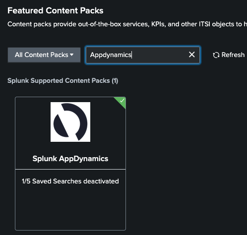
- Click on the AppDynamics content pack and review the list of objects that will be installed.
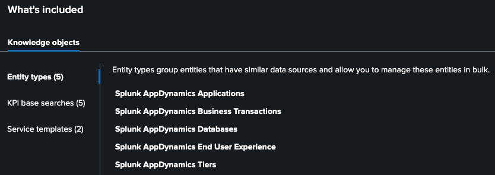
-
On the same screen, click Proceed to begin the installation.
-
We will install everything disabled. Make sure you leave yours the same as the example below
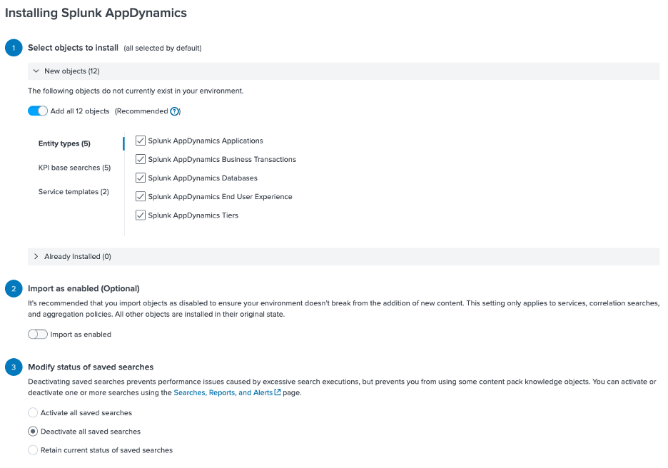
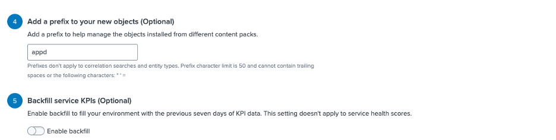
- Click Install selected and then install (skip backups)
⚠️ Best Practice: After installation, all saved searches are disabled by default. Do not enable everything at once. Follow the steps below to selectively enable only the searches required for your environment.
- You should see this
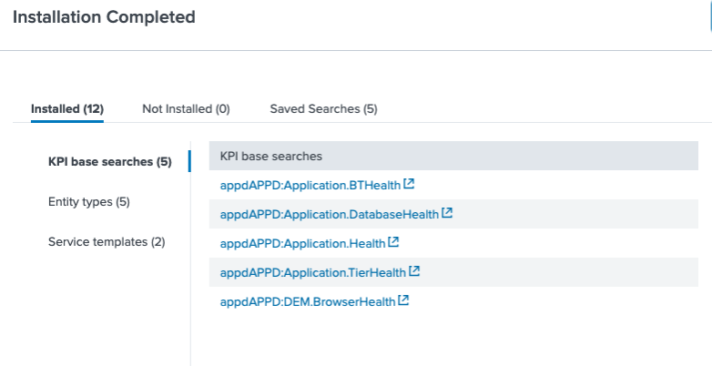
Step 2 — Enable Entity Discovery Searches
After installation, you need to enable the Entity Discovery Searches so ITSI can automatically discover and import AppDynamics entities.
- In the ITSI menu, go to Configuration > Entity Management.
-
Click Entity Discovery Searches and search for AppDynamics.
-
For each search marked below as Yes :
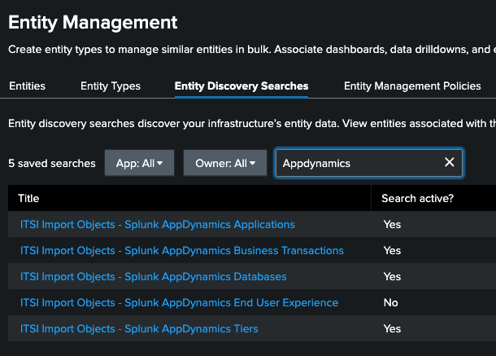
- Click the search name
-
Toggle Search active? to Yes to activate it.
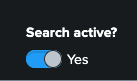
-
SAVE IT
-
Save IT!
Step 3 — Adjust the Search Schedule
- For each search marked below as Yes :
-
Click the search name
-
Click Edit Search
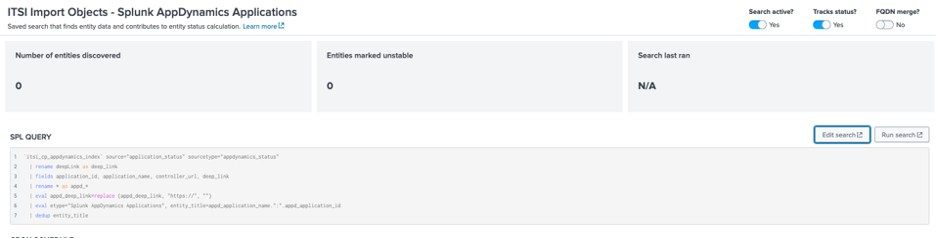
- With the search open, click Edit Schedule.
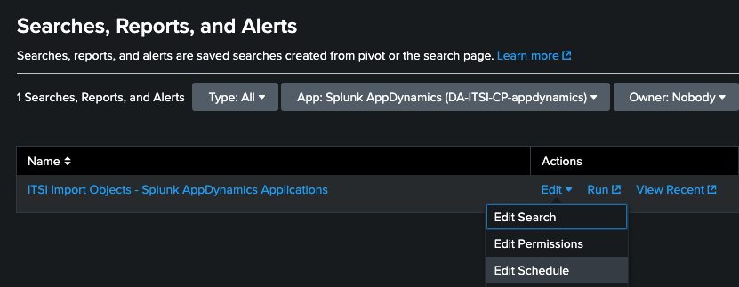
- Adjust the schedule as shown in the figure below:
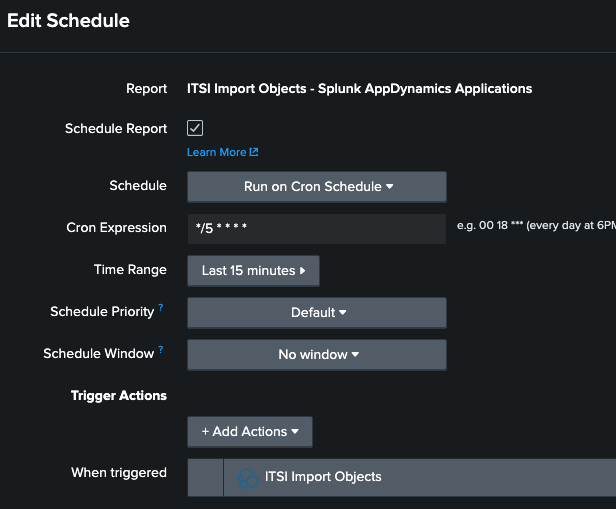
-
In the Cron Expression field, use a number between 5 and 10 (e.g.,
*/5 * * * *to run every 5 minutes). -
Click Save.
Step 4 — Validate the Search Results
To confirm that entities are being discovered correctly, you can run the search manually:
- Selec some searches and...
- Click Run Search to execute the query immediately.
- Review the results to verify that AppDynamics data is flowing in correctly.
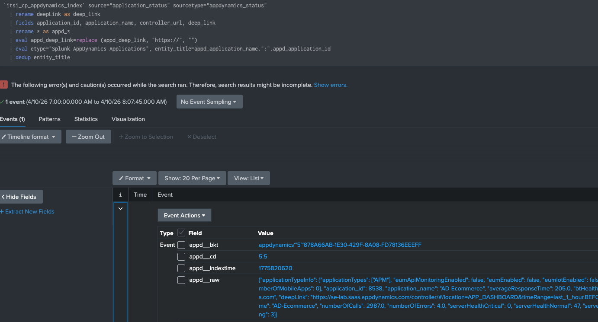